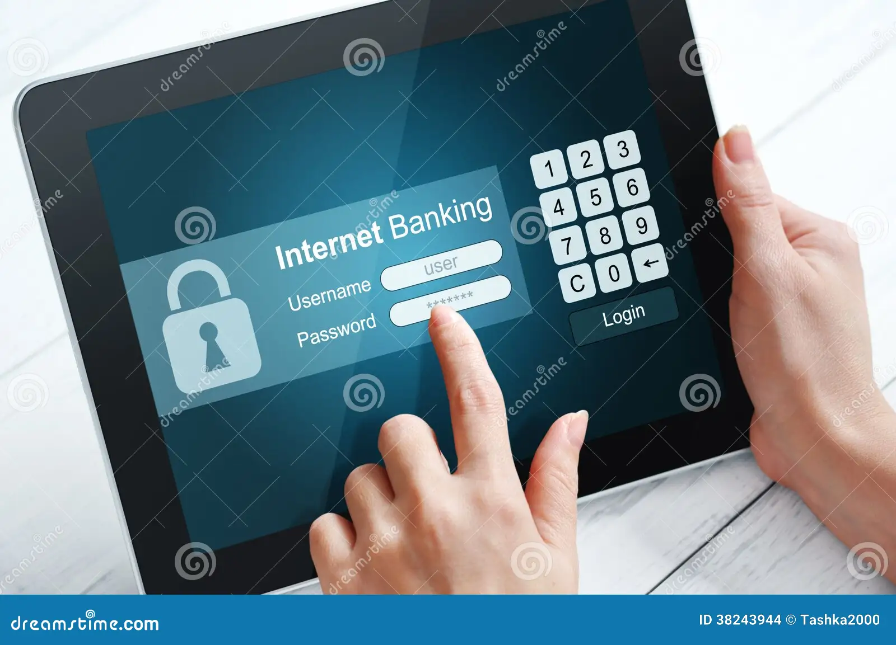

Online banking is also known as internet banking or vitual banking, is a system that enables customers to conduct
a range of financial transactions through a banks website or mobile app.It also allows people to manage their money
digitally including checking balances, transferring money or even paying bills without in need to go to the bank
physically.

How online banking works
- Access: You can access your online banking profile via a web browser on a computer or through your bank’s mobile app
on a laptop.
- Registrations and Logins: You first register your account with the bank to get a username and password. When you want
to bank, you log in using these credentials.
- Security: To ensure your accounts is safe banks use multiple security measures-Username and Passwords or Encryption.
- Dashboards: After logging in you’ll see a dashboard with your account balances, transaction history, and other features.
- Transactions: You can perform various transactions, such as- View account details, Transfer funds, pay bills, manage
your cards and applying for loans.
Benefits of online banking
Since the world is changing TECHNOLOGICALLY meaning that old people now wont need to stand long queue to withdraw
money from the bank, but NOW they can use ONLINE BANKING. Now people can:
- Saves travelling costs: A person does not need to travel fro far in order to get acess to their transactions
instead they can aceess it online.
- Enhance Security:
- Lower fees: Online banks often have lower operating cost than
- Faster Transactions
- Easy access to financial products
Disadvantages of Online banking
- Hacking and Phishing: Online banking platforms are vulnerable to cyberattacks, phishing scams and identify
theft where criminals try to obtain your personal information.
- No cash Deposit: Most online banking do not allow you to deposit cash directly you typically need to visit
a bank or an ATM that aceepts cash.
- Transactions Disputes: Disagreements or errors in online transactions can sometimes require a physical visit to
the bank to resolve.